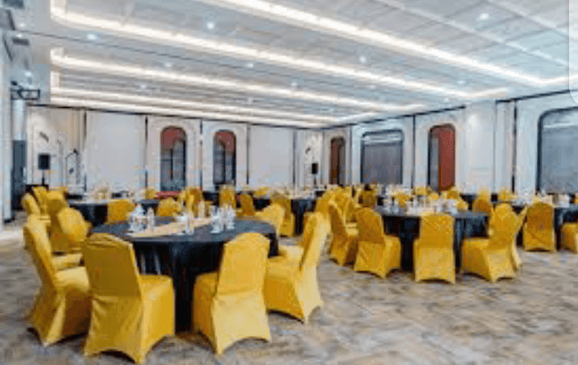

Wuri na Zamani kuma Mai Sauƙin Daidaitawa don Duk Wurare
Dakin al'umma na AUN wuri ne mai daraja wanda aka sani da fadin ciki mai kyau da salo. Wuri ne mai sauƙin daidaitawa wanda za a iya amfani da shi don nau'ikan abubuwan da yawa, ciki har da karɓar baƙi a auren, liyafar kamfanoni, bukukuwan haihuwa, da bukukuwan yaye digiri. Ƙungiyar gudanarwa ta ƙwararru da kayan aiki masu ɗauke da komai suna tabbatar da taron da ya dace kuma abin tunawa ga masu masauki da baƙi. Wuri ne da mutane ke so idan suna neman kyakkyawa da amfani a Yola.